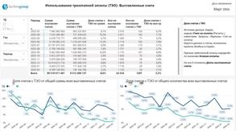
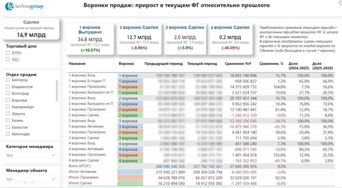
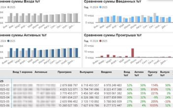
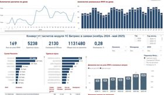
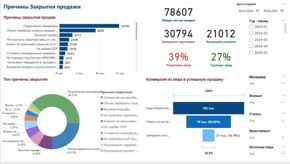
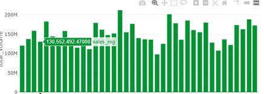

Создаю дашборды, в которых цифры рассказывают истории.
Помогаю бизнесу принимать стратегические решения.
Посмотреть проекты
Аналитик данных с более чем 5-летним опытом в научных, логистических и коммерческих проектах. Мои решения помогают бизнесу видеть данные, понимать их и принимать обоснованные решения.
Специализируюсь на проектировании и автоматизации ETL-процессов, разработке ключевых метрик и создании интерактивных дашбордов, ориентированных на конкретные бизнес-цели.
Провожу анализ данных с помощью Python (Pandas, Seaborn, Numpy, Matplotlib, SciPy, Plotly), SQL, Power BI и Tableau, подбирая инструмент под задачу.
Всегда стремлюсь к тому, чтобы визуализация не просто «выглядела красиво», а помогала принимать решения.

Отчет показывает время отгрузки и дни просрочки по разным периодам, отображены средние и средневзвешенные показатели по суммам партий.
Посмотреть
Отчет показывает распределение по воронкам продаж объектов и их конверсию в сделки, а также сравнение текущего периода с аналогичным предыдущим.
Посмотреть
В отчете представлена динамика показателей первой воронки продаж (переносов объектов), рассчитаны скользящее среднее, и приводится сравнение показателей YoY и MoM.
Дашборд Код Python
Отчет показывает количество расчетов в системе 1С Битрикс и переход (конверсию) в заявки с динамикой по периодам.
Посмотреть
Представлены исторические данные по объемам продаж, динамика в разрезе разных стадий, воронка продаж, а также основные причины закрытия продаж.
Посмотреть
Дашборд построен в Redash (Karpov.courses), данные к каждому графику получены с помощью SQL-запросов к базе.
Посмотреть
Готова обсудить новый проект, сотрудничество или просто ответить на вопросы.